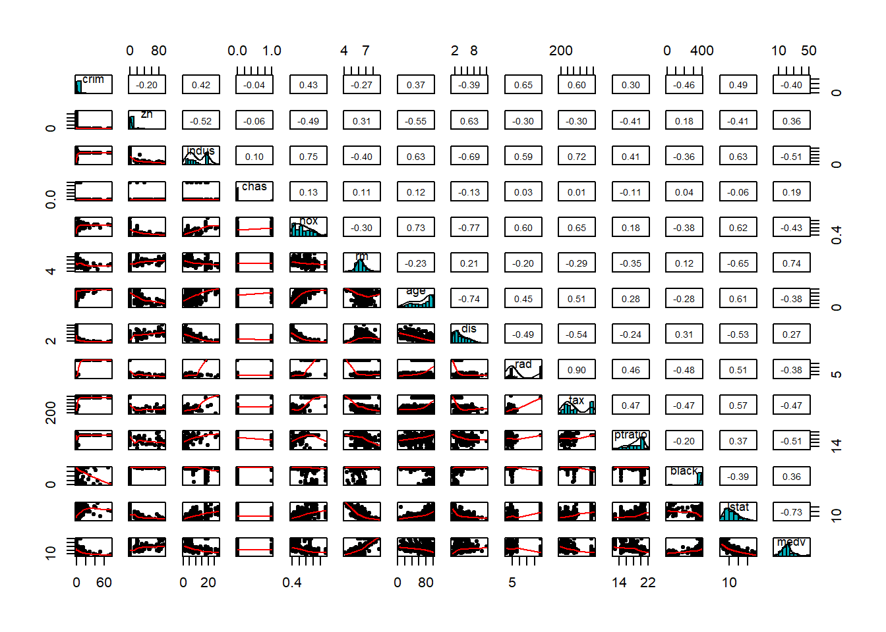
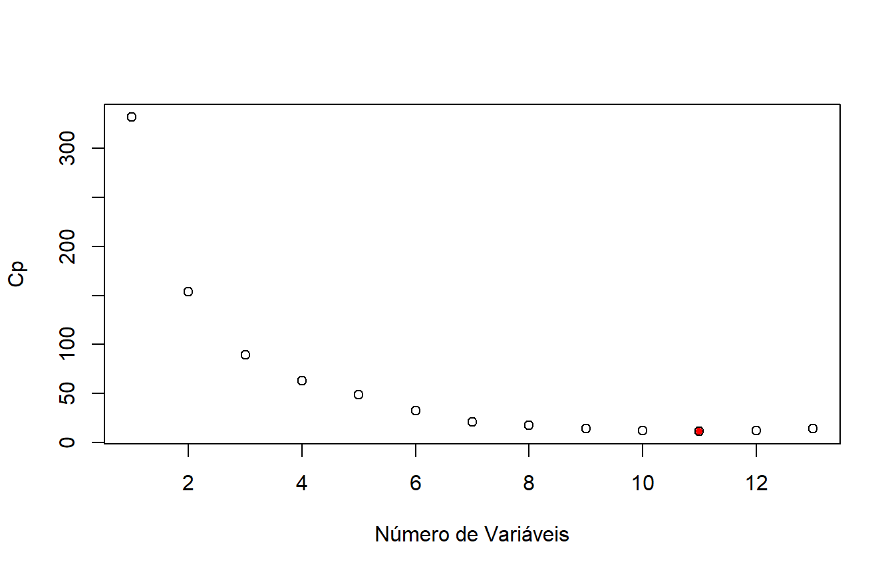
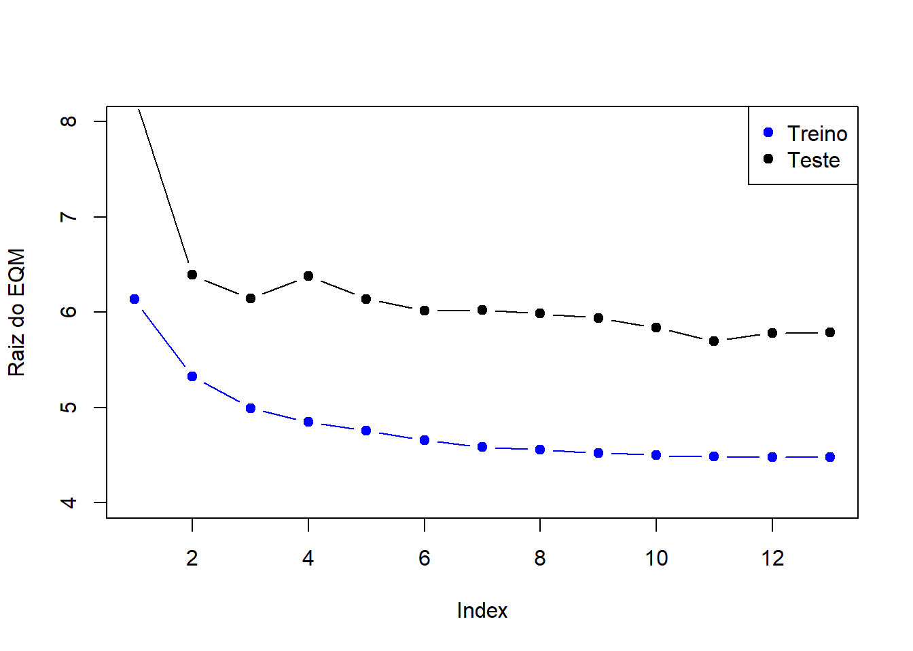

Seleção de Modelos
Carregando Bibliotecas
Carregando os dados
crim zn indus chas nox rm age dis rad tax ptratio black lstat
1 0.00632 18 2.31 0 0.538 6.575 65.2 4.0900 1 296 15.3 396.90 4.98
2 0.02731 0 7.07 0 0.469 6.421 78.9 4.9671 2 242 17.8 396.90 9.14
3 0.02729 0 7.07 0 0.469 7.185 61.1 4.9671 2 242 17.8 392.83 4.03
4 0.03237 0 2.18 0 0.458 6.998 45.8 6.0622 3 222 18.7 394.63 2.94
5 0.06905 0 2.18 0 0.458 7.147 54.2 6.0622 3 222 18.7 396.90 5.33
6 0.02985 0 2.18 0 0.458 6.430 58.7 6.0622 3 222 18.7 394.12 5.21
medv
1 24.0
2 21.6
3 34.7
4 33.4
5 36.2
6 28.7Code
summary(Boston) crim zn indus chas
Min. : 0.00632 Min. : 0.00 Min. : 0.46 Min. :0.00000
1st Qu.: 0.08205 1st Qu.: 0.00 1st Qu.: 5.19 1st Qu.:0.00000
Median : 0.25651 Median : 0.00 Median : 9.69 Median :0.00000
Mean : 3.61352 Mean : 11.36 Mean :11.14 Mean :0.06917
3rd Qu.: 3.67708 3rd Qu.: 12.50 3rd Qu.:18.10 3rd Qu.:0.00000
Max. :88.97620 Max. :100.00 Max. :27.74 Max. :1.00000
nox rm age dis
Min. :0.3850 Min. :3.561 Min. : 2.90 Min. : 1.130
1st Qu.:0.4490 1st Qu.:5.886 1st Qu.: 45.02 1st Qu.: 2.100
Median :0.5380 Median :6.208 Median : 77.50 Median : 3.207
Mean :0.5547 Mean :6.285 Mean : 68.57 Mean : 3.795
3rd Qu.:0.6240 3rd Qu.:6.623 3rd Qu.: 94.08 3rd Qu.: 5.188
Max. :0.8710 Max. :8.780 Max. :100.00 Max. :12.127
rad tax ptratio black
Min. : 1.000 Min. :187.0 Min. :12.60 Min. : 0.32
1st Qu.: 4.000 1st Qu.:279.0 1st Qu.:17.40 1st Qu.:375.38
Median : 5.000 Median :330.0 Median :19.05 Median :391.44
Mean : 9.549 Mean :408.2 Mean :18.46 Mean :356.67
3rd Qu.:24.000 3rd Qu.:666.0 3rd Qu.:20.20 3rd Qu.:396.23
Max. :24.000 Max. :711.0 Max. :22.00 Max. :396.90
lstat medv
Min. : 1.73 Min. : 5.00
1st Qu.: 6.95 1st Qu.:17.02
Median :11.36 Median :21.20
Mean :12.65 Mean :22.53
3rd Qu.:16.95 3rd Qu.:25.00
Max. :37.97 Max. :50.00 Code
nrow(Boston)[1] 506Explicação das variáveis
Code
# Boston Database
#
# 1) crim - taxa de criminalidade per capita por cidade.
#
# 2) zn - proporção de terrenos residenciais para lotes acima de 25,000 sq.ft.
#
# 3) indus - proporção de negócios não comerciais por acres e por cidade.
#
# 4) chas - variável dummy do Rio Charles (= 1 se próximo do rio; 0 de outra forma).
#
# 5) nox - concentração de óxido de nitrogênio (partes por 10 milhões).
#
# 6) rm - número médio de cômodos por habitação
#
# 7) age - proporção da unidade ocupadas pelos proprietários construídas antes 1940.
#
# 8) dis - média ponderada das distâncias dos 5 pontos de emprego em Boston.
#
# 9) rad - indice de acessibilidade das avenidas radiais.
#
# 10) tax - valor cheio da taxa de propriedade por $10,000.
#
# 11) ptratio - razão aluno-professor por cidade.
#
# 12) black - 1000(Bk−0.63)21000(Bk−0.63)2 proporção de negros por cidade.
#
# 13) lstat - percentual de baixo status da população.
#
# 14) medv - valor mediano das casas ocupadas pelos proprietário em $1000s. (Var. Resposta)Conjunto de teste e treino
Carregando pacotes exigidos: lattice
Attaching package: 'caret'The following object is masked from 'package:purrr':
liftCode
'data.frame': 403 obs. of 14 variables:
$ crim : num 0.00632 0.02731 0.02729 0.03237 0.06905 ...
$ zn : num 18 0 0 0 0 0 12.5 12.5 12.5 12.5 ...
$ indus : num 2.31 7.07 7.07 2.18 2.18 2.18 7.87 7.87 7.87 7.87 ...
$ chas : int 0 0 0 0 0 0 0 0 0 0 ...
$ nox : num 0.538 0.469 0.469 0.458 0.458 0.458 0.524 0.524 0.524 0.524 ...
$ rm : num 6.58 6.42 7.18 7 7.15 ...
$ age : num 65.2 78.9 61.1 45.8 54.2 58.7 66.6 96.1 85.9 94.3 ...
$ dis : num 4.09 4.97 4.97 6.06 6.06 ...
$ rad : int 1 2 2 3 3 3 5 5 5 5 ...
$ tax : num 296 242 242 222 222 222 311 311 311 311 ...
$ ptratio: num 15.3 17.8 17.8 18.7 18.7 18.7 15.2 15.2 15.2 15.2 ...
$ black : num 397 397 393 395 397 ...
$ lstat : num 4.98 9.14 4.03 2.94 5.33 ...
$ medv : num 24 21.6 34.7 33.4 36.2 28.7 22.9 27.1 18.9 15 ...Code
str(conj_teste)'data.frame': 103 obs. of 14 variables:
$ crim : num 0.211 0.63 0.627 1.252 0.852 ...
$ zn : num 12.5 0 0 0 0 0 0 75 0 0 ...
$ indus : num 7.87 8.14 8.14 8.14 8.14 8.14 8.14 2.95 6.91 6.91 ...
$ chas : int 0 0 0 0 0 0 0 0 0 0 ...
$ nox : num 0.524 0.538 0.538 0.538 0.538 0.538 0.538 0.428 0.448 0.448 ...
$ rm : num 5.63 5.95 5.83 5.57 5.96 ...
$ age : num 100 61.8 56.5 98.1 89.2 94.1 96.9 21.8 6.5 95.3 ...
$ dis : num 6.08 4.71 4.5 3.8 4.01 ...
$ rad : int 5 4 4 4 4 4 4 3 3 3 ...
$ tax : num 311 307 307 307 307 307 307 252 233 233 ...
$ ptratio: num 15.2 21 21 21 21 21 21 18.3 17.9 17.9 ...
$ black : num 387 397 396 377 393 ...
$ lstat : num 29.93 8.26 8.47 21.02 13.83 ...
$ medv : num 16.5 20.4 19.9 13.6 19.6 12.7 13.5 30.8 24.7 14.4 ...| crim | zn | indus | chas | nox | rm | age | dis | rad | tax | ptratio | black | lstat | medv |
|---|---|---|---|---|---|---|---|---|---|---|---|---|---|
| 0.00632 | 18.0 | 2.31 | 0 | 0.538 | 6.575 | 65.2 | 4.0900 | 1 | 296 | 15.3 | 396.90 | 4.98 | 24.0 |
| 0.02731 | 0.0 | 7.07 | 0 | 0.469 | 6.421 | 78.9 | 4.9671 | 2 | 242 | 17.8 | 396.90 | 9.14 | 21.6 |
| 0.02729 | 0.0 | 7.07 | 0 | 0.469 | 7.185 | 61.1 | 4.9671 | 2 | 242 | 17.8 | 392.83 | 4.03 | 34.7 |
| 0.03237 | 0.0 | 2.18 | 0 | 0.458 | 6.998 | 45.8 | 6.0622 | 3 | 222 | 18.7 | 394.63 | 2.94 | 33.4 |
| 0.06905 | 0.0 | 2.18 | 0 | 0.458 | 7.147 | 54.2 | 6.0622 | 3 | 222 | 18.7 | 396.90 | 5.33 | 36.2 |
| 0.02985 | 0.0 | 2.18 | 0 | 0.458 | 6.430 | 58.7 | 6.0622 | 3 | 222 | 18.7 | 394.12 | 5.21 | 28.7 |
| 0.08829 | 12.5 | 7.87 | 0 | 0.524 | 6.012 | 66.6 | 5.5605 | 5 | 311 | 15.2 | 395.60 | 12.43 | 22.9 |
| 0.14455 | 12.5 | 7.87 | 0 | 0.524 | 6.172 | 96.1 | 5.9505 | 5 | 311 | 15.2 | 396.90 | 19.15 | 27.1 |
| 0.17004 | 12.5 | 7.87 | 0 | 0.524 | 6.004 | 85.9 | 6.5921 | 5 | 311 | 15.2 | 386.71 | 17.10 | 18.9 |
| 0.22489 | 12.5 | 7.87 | 0 | 0.524 | 6.377 | 94.3 | 6.3467 | 5 | 311 | 15.2 | 392.52 | 20.45 | 15.0 |
Matriz de correlação
Matriz de dispersão
Attaching package: 'psych'The following objects are masked from 'package:ggplot2':
%+%, alphaCode
pairs.panels(conj_treino,
method = "pearson", # metodo de correlação
hist.col = "#00AFBB",
density = TRUE, # mostra graficos de densidade
ellipses = FALSE # mostra elipses de correlação
)
Métodos de seleção de modelo
Code
## Best Subset sem definir o número máx de subsets a ser avaliado
ajusreg.comp <- regsubsets(medv ~ ., data=conj_treino)
summary(ajusreg.comp)Subset selection object
Call: regsubsets.formula(medv ~ ., data = conj_treino)
13 Variables (and intercept)
Forced in Forced out
crim FALSE FALSE
zn FALSE FALSE
indus FALSE FALSE
chas FALSE FALSE
nox FALSE FALSE
rm FALSE FALSE
age FALSE FALSE
dis FALSE FALSE
rad FALSE FALSE
tax FALSE FALSE
ptratio FALSE FALSE
black FALSE FALSE
lstat FALSE FALSE
1 subsets of each size up to 8
Selection Algorithm: exhaustive
crim zn indus chas nox rm age dis rad tax ptratio black lstat
1 ( 1 ) " " " " " " " " " " "*" " " " " " " " " " " " " " "
2 ( 1 ) " " " " " " " " " " "*" " " " " " " " " " " " " "*"
3 ( 1 ) " " " " " " " " " " "*" " " " " " " " " "*" " " "*"
4 ( 1 ) " " " " " " " " " " "*" " " " " " " " " "*" "*" "*"
5 ( 1 ) " " " " " " " " " " "*" " " "*" " " " " "*" "*" "*"
6 ( 1 ) " " " " " " " " "*" "*" " " "*" " " " " "*" "*" "*"
7 ( 1 ) " " " " " " "*" "*" "*" " " "*" " " " " "*" "*" "*"
8 ( 1 ) " " " " " " "*" "*" "*" " " "*" "*" " " "*" "*" "*" Code
## Não testou todas as combinações possíveisnvmax=13
Code
ajusreg.comp <- regsubsets(medv ~ ., data=conj_treino, nvmax=13)
sumario.reg <- summary(ajusreg.comp)
sumario.regSubset selection object
Call: regsubsets.formula(medv ~ ., data = conj_treino, nvmax = 13)
13 Variables (and intercept)
Forced in Forced out
crim FALSE FALSE
zn FALSE FALSE
indus FALSE FALSE
chas FALSE FALSE
nox FALSE FALSE
rm FALSE FALSE
age FALSE FALSE
dis FALSE FALSE
rad FALSE FALSE
tax FALSE FALSE
ptratio FALSE FALSE
black FALSE FALSE
lstat FALSE FALSE
1 subsets of each size up to 13
Selection Algorithm: exhaustive
crim zn indus chas nox rm age dis rad tax ptratio black lstat
1 ( 1 ) " " " " " " " " " " "*" " " " " " " " " " " " " " "
2 ( 1 ) " " " " " " " " " " "*" " " " " " " " " " " " " "*"
3 ( 1 ) " " " " " " " " " " "*" " " " " " " " " "*" " " "*"
4 ( 1 ) " " " " " " " " " " "*" " " " " " " " " "*" "*" "*"
5 ( 1 ) " " " " " " " " " " "*" " " "*" " " " " "*" "*" "*"
6 ( 1 ) " " " " " " " " "*" "*" " " "*" " " " " "*" "*" "*"
7 ( 1 ) " " " " " " "*" "*" "*" " " "*" " " " " "*" "*" "*"
8 ( 1 ) " " " " " " "*" "*" "*" " " "*" "*" " " "*" "*" "*"
9 ( 1 ) " " " " " " "*" "*" "*" " " "*" "*" "*" "*" "*" "*"
10 ( 1 ) " " "*" " " "*" "*" "*" " " "*" "*" "*" "*" "*" "*"
11 ( 1 ) "*" "*" " " "*" "*" "*" " " "*" "*" "*" "*" "*" "*"
12 ( 1 ) "*" "*" " " "*" "*" "*" "*" "*" "*" "*" "*" "*" "*"
13 ( 1 ) "*" "*" "*" "*" "*" "*" "*" "*" "*" "*" "*" "*" "*" Code
names(sumario.reg)[1] "which" "rsq" "rss" "adjr2" "cp" "bic" "outmat" "obj" Avaliando os modelos

Como extrair detalhes do ajuste
Code
coef(ajusreg.comp,11) (Intercept) crim zn chas nox rm
24.11955557 -0.05912124 0.03395127 3.45970324 -17.22861717 5.10891588
dis rad tax ptratio black lstat
-1.27274817 0.25203587 -0.01015538 -0.94732891 0.01296186 -0.39603435 Forward Stepwise (passo a passo à frente)
Code
ajusreg.fwd <- regsubsets(medv ~ . , data=conj_treino,nvmax=13, method="forward")
sumario.reg.fwd <- summary(ajusreg.fwd)
sumario.reg.fwd Subset selection object
Call: regsubsets.formula(medv ~ ., data = conj_treino, nvmax = 13,
method = "forward")
13 Variables (and intercept)
Forced in Forced out
crim FALSE FALSE
zn FALSE FALSE
indus FALSE FALSE
chas FALSE FALSE
nox FALSE FALSE
rm FALSE FALSE
age FALSE FALSE
dis FALSE FALSE
rad FALSE FALSE
tax FALSE FALSE
ptratio FALSE FALSE
black FALSE FALSE
lstat FALSE FALSE
1 subsets of each size up to 13
Selection Algorithm: forward
crim zn indus chas nox rm age dis rad tax ptratio black lstat
1 ( 1 ) " " " " " " " " " " "*" " " " " " " " " " " " " " "
2 ( 1 ) " " " " " " " " " " "*" " " " " " " " " " " " " "*"
3 ( 1 ) " " " " " " " " " " "*" " " " " " " " " "*" " " "*"
4 ( 1 ) " " " " " " " " " " "*" " " " " " " " " "*" "*" "*"
5 ( 1 ) " " " " " " " " " " "*" " " "*" " " " " "*" "*" "*"
6 ( 1 ) " " " " " " " " "*" "*" " " "*" " " " " "*" "*" "*"
7 ( 1 ) " " " " " " "*" "*" "*" " " "*" " " " " "*" "*" "*"
8 ( 1 ) " " " " " " "*" "*" "*" " " "*" "*" " " "*" "*" "*"
9 ( 1 ) " " " " " " "*" "*" "*" " " "*" "*" "*" "*" "*" "*"
10 ( 1 ) " " "*" " " "*" "*" "*" " " "*" "*" "*" "*" "*" "*"
11 ( 1 ) "*" "*" " " "*" "*" "*" " " "*" "*" "*" "*" "*" "*"
12 ( 1 ) "*" "*" " " "*" "*" "*" "*" "*" "*" "*" "*" "*" "*"
13 ( 1 ) "*" "*" "*" "*" "*" "*" "*" "*" "*" "*" "*" "*" "*" Code
which.min(sumario.reg.fwd$cp)[1] 11Code

Como extrair detalhes do ajuste
Code
coef(ajusreg.fwd,11) (Intercept) crim zn chas nox rm
24.11955557 -0.05912124 0.03395127 3.45970324 -17.22861717 5.10891588
dis rad tax ptratio black lstat
-1.27274817 0.25203587 -0.01015538 -0.94732891 0.01296186 -0.39603435 Backward Stepwise (passo a passo atrás)
Code
ajusreg.bwd <- regsubsets(medv ~ . , data=conj_treino,nvmax=13, method="backward")
sumario.reg.bwd <- summary(ajusreg.bwd)
sumario.reg.bwdSubset selection object
Call: regsubsets.formula(medv ~ ., data = conj_treino, nvmax = 13,
method = "backward")
13 Variables (and intercept)
Forced in Forced out
crim FALSE FALSE
zn FALSE FALSE
indus FALSE FALSE
chas FALSE FALSE
nox FALSE FALSE
rm FALSE FALSE
age FALSE FALSE
dis FALSE FALSE
rad FALSE FALSE
tax FALSE FALSE
ptratio FALSE FALSE
black FALSE FALSE
lstat FALSE FALSE
1 subsets of each size up to 13
Selection Algorithm: backward
crim zn indus chas nox rm age dis rad tax ptratio black lstat
1 ( 1 ) " " " " " " " " " " "*" " " " " " " " " " " " " " "
2 ( 1 ) " " " " " " " " " " "*" " " " " " " " " " " " " "*"
3 ( 1 ) " " " " " " " " " " "*" " " " " " " " " "*" " " "*"
4 ( 1 ) " " " " " " " " " " "*" " " " " " " " " "*" "*" "*"
5 ( 1 ) " " " " " " " " " " "*" " " "*" " " " " "*" "*" "*"
6 ( 1 ) " " " " " " " " "*" "*" " " "*" " " " " "*" "*" "*"
7 ( 1 ) " " " " " " "*" "*" "*" " " "*" " " " " "*" "*" "*"
8 ( 1 ) " " " " " " "*" "*" "*" " " "*" "*" " " "*" "*" "*"
9 ( 1 ) " " " " " " "*" "*" "*" " " "*" "*" "*" "*" "*" "*"
10 ( 1 ) " " "*" " " "*" "*" "*" " " "*" "*" "*" "*" "*" "*"
11 ( 1 ) "*" "*" " " "*" "*" "*" " " "*" "*" "*" "*" "*" "*"
12 ( 1 ) "*" "*" " " "*" "*" "*" "*" "*" "*" "*" "*" "*" "*"
13 ( 1 ) "*" "*" "*" "*" "*" "*" "*" "*" "*" "*" "*" "*" "*" Code
which.min(sumario.reg.bwd$cp)[1] 11Code

Como extrair detalhes do ajuste
Code
coef(ajusreg.bwd,11) (Intercept) crim zn chas nox rm
24.11955557 -0.05912124 0.03395127 3.45970324 -17.22861717 5.10891588
dis rad tax ptratio black lstat
-1.27274817 0.25203587 -0.01015538 -0.94732891 0.01296186 -0.39603435 Comportamento dos erros de treino e teste
Code
## Codigo original de T. Hastie
reg.fwd <- regsubsets(medv ~ . ,data=conj_treino,nvmax=13, method="forward")
val.erro <- rep(NA,13)
x.teste <- model.matrix(medv~.,data=conj_teste)
for(i in 1:13){
coefi <- coef(reg.fwd,id=i)
pred <- x.teste[,names(coefi)]%*%coefi
val.erro[i] <- mean((conj_teste$medv - pred)^2)
}
plot(sqrt(val.erro),ylab="Raiz do EQM",ylim=c(4,8),pch=19,type="b")
points(sqrt(reg.fwd$rss[-1]/403),col="blue",pch=19,type="b")
legend("topright",legend=c("Treino","Teste"),col=c("blue","black"),pch=19)
Testando outra estatística de seleção de modelos - BIC
Code
ajusreg.fwd1 <- regsubsets(medv ~ . , data=conj_treino,nvmax=13, method="forward")
sumario.reg.fwd1 <- summary(ajusreg.fwd1)
names(sumario.reg.fwd1)[1] "which" "rsq" "rss" "adjr2" "cp" "bic" "outmat" "obj" Code
which.min(sumario.reg.fwd1$bic)[1] 7Code

Code
coef(ajusreg.fwd1,7) (Intercept) chas nox rm dis ptratio
18.15699005 3.62527238 -16.32477597 5.61737907 -1.00175093 -0.95906300
black lstat
0.01229926 -0.39019735 Usando o Cp novamente
Comparando os dois modelos com o lm()
Code
Call:
lm(formula = medv ~ chas + nox + rm + dis + ptratio + black +
lstat, data = conj_treino)
Residuals:
Min 1Q Median 3Q Max
-18.4971 -2.7789 -0.5478 1.7933 26.9857
Coefficients:
Estimate Std. Error t value Pr(>|t|)
(Intercept) 18.156990 5.385606 3.371 0.000822 ***
chas 3.625272 1.009714 3.590 0.000372 ***
nox -16.324776 3.534591 -4.619 5.24e-06 ***
rm 5.617379 0.457084 12.290 < 2e-16 ***
dis -1.001751 0.180856 -5.539 5.56e-08 ***
ptratio -0.959063 0.119626 -8.017 1.24e-14 ***
black 0.012299 0.002702 4.552 7.07e-06 ***
lstat -0.390197 0.053934 -7.235 2.44e-12 ***
---
Signif. codes: 0 '***' 0.001 '**' 0.01 '*' 0.05 '.' 0.1 ' ' 1
Residual standard error: 4.631 on 395 degrees of freedom
Multiple R-squared: 0.7512, Adjusted R-squared: 0.7468
F-statistic: 170.4 on 7 and 395 DF, p-value: < 2.2e-16Code
Call:
lm(formula = medv ~ crim + zn + chas + nox + rm + dis + rad +
tax + ptratio + black + lstat, data = conj_treino)
Residuals:
Min 1Q Median 3Q Max
-18.1857 -2.8830 -0.5641 1.8709 25.9074
Coefficients:
Estimate Std. Error t value Pr(>|t|)
(Intercept) 24.119556 5.661887 4.260 2.56e-05 ***
crim -0.059121 0.038751 -1.526 0.127902
zn 0.033951 0.015207 2.233 0.026139 *
chas 3.459703 0.995635 3.475 0.000568 ***
nox -17.228617 3.807289 -4.525 8.02e-06 ***
rm 5.108916 0.466926 10.942 < 2e-16 ***
dis -1.272748 0.203301 -6.260 1.01e-09 ***
rad 0.252036 0.067390 3.740 0.000212 ***
tax -0.010155 0.003556 -2.856 0.004525 **
ptratio -0.947329 0.141436 -6.698 7.38e-11 ***
black 0.012962 0.002822 4.593 5.90e-06 ***
lstat -0.396034 0.054069 -7.325 1.38e-12 ***
---
Signif. codes: 0 '***' 0.001 '**' 0.01 '*' 0.05 '.' 0.1 ' ' 1
Residual standard error: 4.554 on 391 degrees of freedom
Multiple R-squared: 0.7618, Adjusted R-squared: 0.7551
F-statistic: 113.7 on 11 and 391 DF, p-value: < 2.2e-16Eliminando a variável não significativa
Code
Call:
lm(formula = medv ~ zn + chas + nox + rm + dis + rad + tax +
ptratio + black + lstat, data = conj_treino)
Residuals:
Min 1Q Median 3Q Max
-18.1471 -2.7317 -0.5389 1.9772 25.9698
Coefficients:
Estimate Std. Error t value Pr(>|t|)
(Intercept) 22.884672 5.613214 4.077 5.53e-05 ***
zn 0.031594 0.015154 2.085 0.037726 *
chas 3.524816 0.996402 3.538 0.000452 ***
nox -16.721605 3.799175 -4.401 1.39e-05 ***
rm 5.183515 0.465145 11.144 < 2e-16 ***
dis -1.231499 0.201836 -6.101 2.52e-09 ***
rad 0.218320 0.063772 3.423 0.000683 ***
tax -0.009827 0.003556 -2.764 0.005984 **
ptratio -0.938621 0.141560 -6.631 1.11e-10 ***
black 0.013799 0.002773 4.976 9.72e-07 ***
lstat -0.406190 0.053749 -7.557 2.94e-13 ***
---
Signif. codes: 0 '***' 0.001 '**' 0.01 '*' 0.05 '.' 0.1 ' ' 1
Residual standard error: 4.562 on 392 degrees of freedom
Multiple R-squared: 0.7604, Adjusted R-squared: 0.7543
F-statistic: 124.4 on 10 and 392 DF, p-value: < 2.2e-16Avaliando Colinearidade
Uma investigação minuciosa da multicollinearidade envolverá a análise do valor do \(R^2\) que resulta da regressão de cada uma das variáveis explicativas contra todas as outras. A relação entre as variáveis explicativas pode ser julgada examinando uma quantidade chamada fator de inflacionário da variância (FIV) ou Variance Inflation Factor (VIF). Seja \(Rj~^{2}\) o quadrado do coeficiente de correlação múltipla que resulta quando a variável explicativa \(Xj~\) é ajustada contra todas as outras variáveis explicativas. Então o vif para \(Xj~\) é \(VIFj = 1 / (1-Rj~^{2})\)
A regra geral é que vifs superiores a 4 justificam novas investigações, enquanto VIFs superiores a 10 são sinais de multicollinearidade grave que requerem correção.
zn chas nox rm dis rad tax ptratio
2.128862 1.076888 3.707463 2.032934 3.357506 6.005229 6.999822 1.796214
black lstat
1.388299 3.010108 Code
Call:
lm(formula = medv ~ zn + chas + nox + rm + dis + rad + ptratio +
black + lstat, data = conj_treino)
Residuals:
Min 1Q Median 3Q Max
-18.6480 -2.9158 -0.5013 1.9274 25.8537
Coefficients:
Estimate Std. Error t value Pr(>|t|)
(Intercept) 21.606433 5.641174 3.830 0.000149 ***
zn 0.021779 0.014856 1.466 0.143439
chas 3.623029 1.004143 3.608 0.000348 ***
nox -18.864099 3.750520 -5.030 7.48e-07 ***
rm 5.337321 0.465687 11.461 < 2e-16 ***
dis -1.150869 0.201396 -5.714 2.18e-08 ***
rad 0.079897 0.039806 2.007 0.045417 *
ptratio -1.016641 0.139883 -7.268 1.99e-12 ***
black 0.014071 0.002794 5.035 7.28e-07 ***
lstat -0.411503 0.054166 -7.597 2.24e-13 ***
---
Signif. codes: 0 '***' 0.001 '**' 0.01 '*' 0.05 '.' 0.1 ' ' 1
Residual standard error: 4.6 on 393 degrees of freedom
Multiple R-squared: 0.7557, Adjusted R-squared: 0.7501
F-statistic: 135.1 on 9 and 393 DF, p-value: < 2.2e-16Code
vif(mod_cp3) zn chas nox rm dis rad ptratio black
2.011936 1.075519 3.553096 2.003832 3.287355 2.300918 1.724780 1.386548
lstat
3.006257